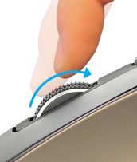

Scroller a regolazione automatica della velocità
Se SmartShift™ è attivato, lo scroller a regolazione automatica della velocità passa automaticamente tra due modalità di scorrimento, in risposta al tocco.
- Modalità di precisione (scorrimento a scatti): ideale per navigare con la massima precisione fra oggetti ed elenchi.
- Modalità iperveloce (scorrimento libero): scorrimento senza attrito per spostarsi in un lampo in documenti di grandi dimensioni e pagine Web.
Ruotare velocemente lo scroller
 |
Rallentare e ruotare lentamente
|

Attiva SmartShift
Selezionare Abilitato dal menu a discesa SmartShift nella scheda Puntamento e scorrimento.

Disabilitare SmartShift selezionando Disattivato dal menu a discesa SmartShift.
Quando SmartShift è disabilitato, facendo scorrere velocemente o lentamente lo scroller non causa il cambio della modalità di scorrimento attuale.
Cambio manuale della modalità
Con SmartShift abilitato o meno, è possibile cambiare modalità premendo il pulsante del cambio di modalità.
Per impostazione predefinita il cambio di modalità è assegnato al pulsante sopra il mouse. Controllare le assegnazioni correnti dei pulsanti nella scheda Mouse.

Impostazione di una modalità di scorrimento fissa
Se si preferisce utilizzare un’unica modalità, è possibile bloccare lo scroller in modalità di precisione (a scatti) o iperveloce (scorrimento libero).
Nella scheda Puntamento e scorrimento, selezionare A scatti o Scorrimento libero dal menu a discesa Modalità scorrimento fissa.

IMPORTANTE!
È possibile bloccare la modalità dello scroller solo quando SmartShift è disabilitato e il cambio di modalità non è assegnato ad alcun pulsante di MX Master.
Per bloccare la modalità di scorrimento
- Selezionare Disattivato dal menu a discesa SmartShift.
- Nella scheda Mouse, fare clic sul pulsante del cambio di modalità evidenziato e selezionare un’azione diversa dal cambio di modalità.
Per ulteriori informazioni vedere la Guida completa di MX Master.